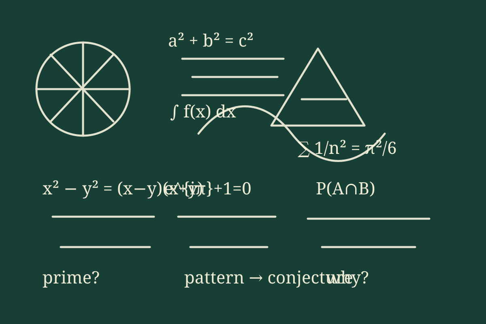

What is a Math Circle?
A Math Circle is an enrichment program where students meet to explore interesting mathematics together. Instead of racing through a textbook, participants spend time on open-ended problems, puzzles, patterns, and mathematical ideas that reward experimentation, discussion, and creative thinking.
The Columbia Math Circle is intended for middle and high school students who are curious about mathematics and would enjoy seeing what the subject looks like beyond the standard curriculum. A typical session may involve working in small groups, testing examples, drawing pictures, making conjectures, finding counterexamples, and explaining why an idea works.
What to expect
- Problems with more than one possible path forward.
- Topics drawn from areas such as number theory, geometry, combinatorics, logic, games, probability, and more.
- Time to think, ask questions, try ideas that fail, and try again.
- Conversation with students and teachers who enjoy mathematics.
- An emphasis on curiosity and mathematical reasoning rather than speed.
Math Circles have a long tradition in mathematical enrichment. If you would like to see examples of similar programs and activities, visit MathCircles.org, the Berkeley Math Circle, or the Julia Robinson Mathematics Festival.

Schedule
Saturday, September 19, 2026
Time: 10:00 a.m.–1:00 p.m.
Location: Hammond School, Columbia, South Carolina
Food: Light snacks will be provided.
Future Math Circle dates will be announced later. To receive future announcements, join the mailing list using the contact information below.
Location and Arrival
854 Galway Lane
Columbia, SC 29209
Hammond is an independent Pre-K–12 school in Columbia with a 100-acre campus. First-time visitors may find it useful to review Hammond's official campus information before coming.
When you arrive
At the gate, please tell the guard that you are there for the Columbia Math Circle.
For general information about the school, visit Hammond School's website. Hammond's main telephone number is (803) 776-0295.
Leadership
The Columbia Math Circle is organized by mathematics educators from Hammond School and the University of South Carolina.
Register, Ask a Question, or Join the Mailing List
To register for the September 19 Math Circle, ask a question, or receive announcements about future meetings, contact Patrick Rybarczyk at prybarczyk@hammondschool.org.